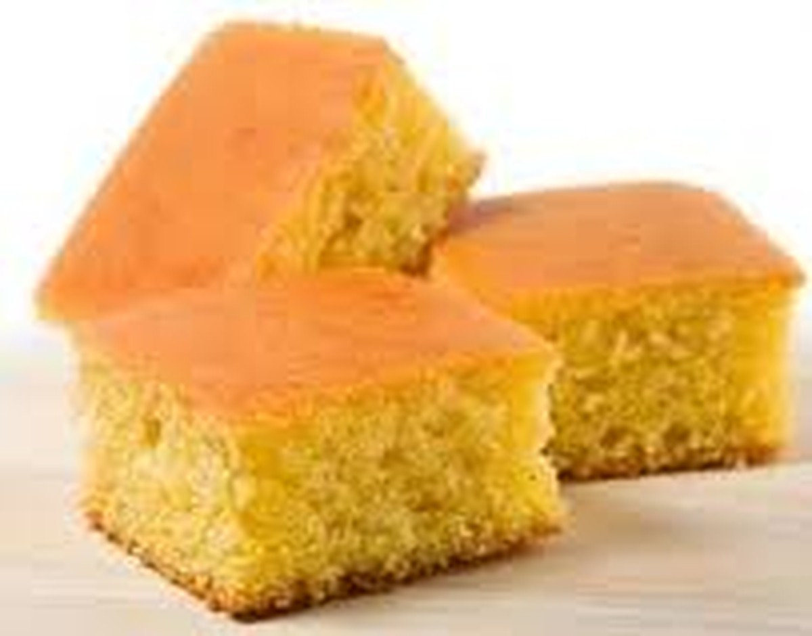

Bolo de Fuba Simples

Ingredientes
- 3 ovos
- 1/2 xícara de óleo
- 1 xícaras de farinha de trigo
- 1 xícara de leite
- 1 e 1/2 xícaras de açúcar
- 1 xícara de fubá
- 1 colher de sopa de fermento em pó
- Obs.: se quiser, acrescente erva doc
Modo de Preparo
- Bater tudo na batedeira e depois incorporar o fermento.
- Despejar em forma untada e enfarinhada e assar em forno previamente aquecido